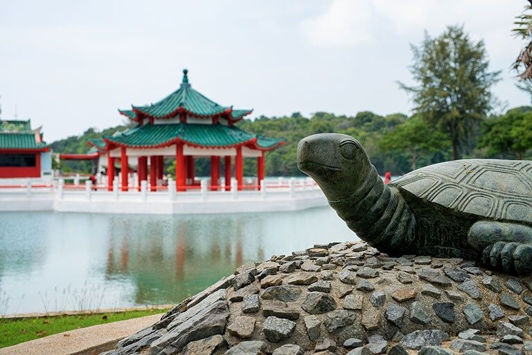
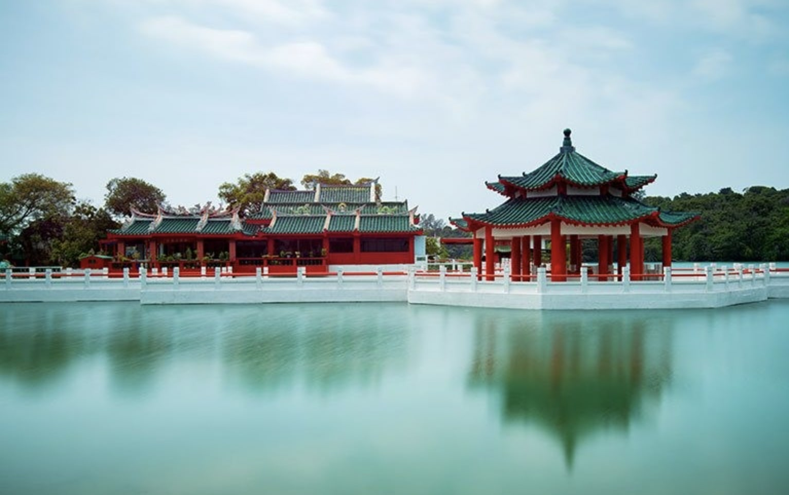
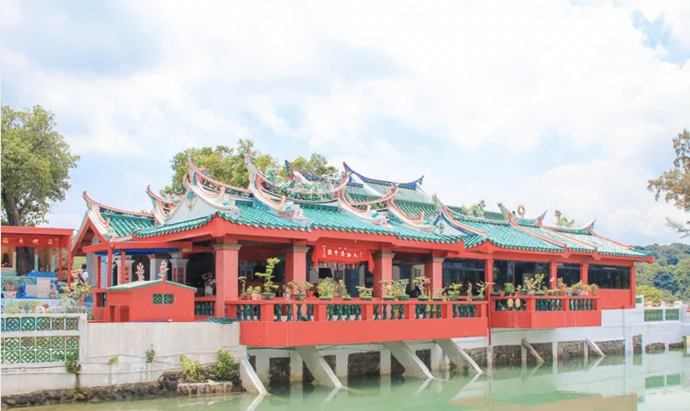
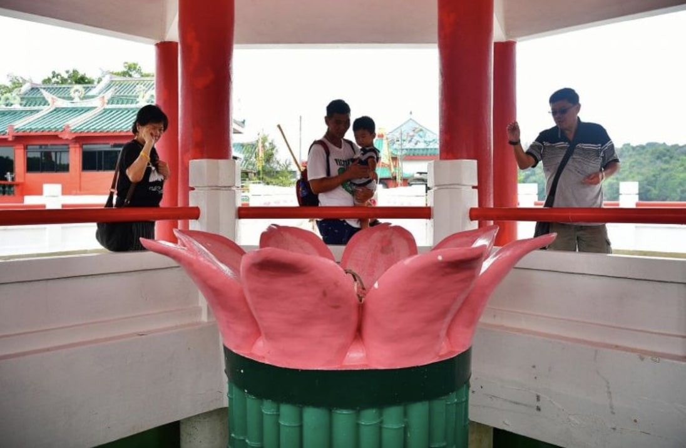

Da Bo Gong

Built in 1923, Da Bo Gong (Tua Pek Kong) is one of Kusu Island's popular landmarks. Located 200m from the jetty, this Chinese temple
houses many deities, but mainly Da Bo Gong for wealth, good health and calm seas, and Guan Yin, the Bodhisattva of Mercy, for sons.

On the ninth month of the lunar calendar, thousands of devotees will go over to Kusu Island to pay their respects to the different deities and
Keramat. Offerings such as joss sticks, fruit, paper money, and “prosperity cakes” are brought by devotees to the Tua Pek Kong Temple.

Next to the temple is a wishing well where there is a lotus-shaped concrete structure with bells in the center of it. Visitors may toss a coin
into to pray for prosperity and good health. After making your wish, throw some coins into the well and try to hit the bells. Some believe
that if your wish comes true, you must head back to the island to offer thanks.
return to top
return to map